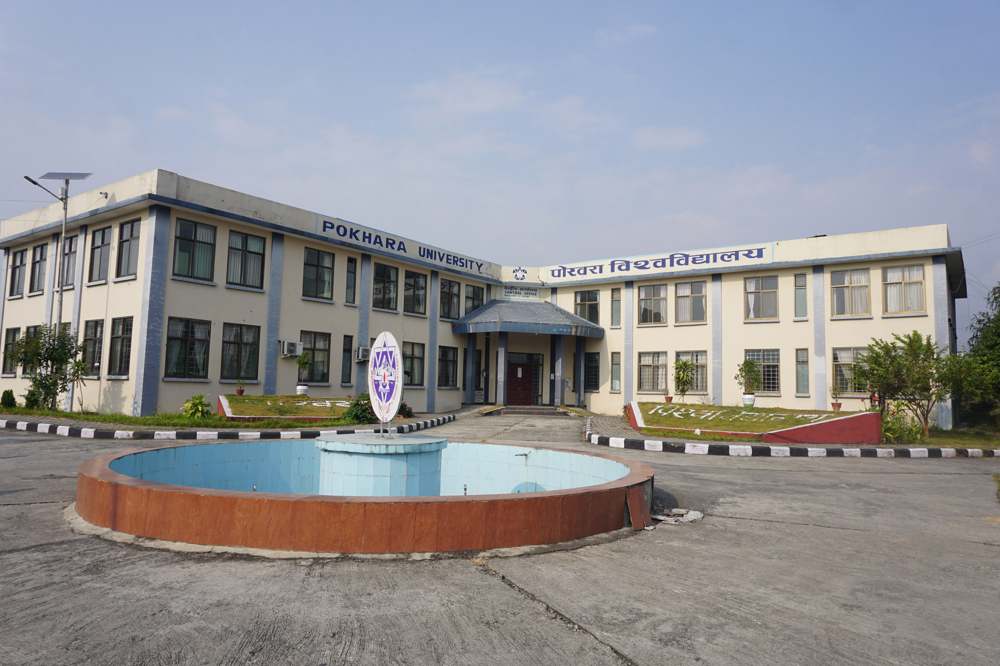
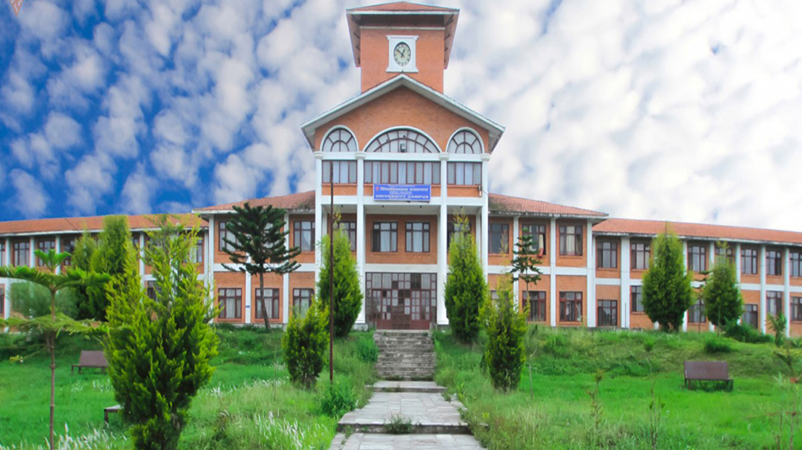

About Me
Education
Ph.D. in Civil Engineering
Dissertation: Accelerating Bus Transport Electrification through Optimization and Reinforcement Learning Strategies
Major Interdepartmental Courses:
- CS6830 Data Science in Practice
- STAT6645 Mathematical Methods for Data Science
- DATA5600 Machine Learning
- LAEP6300 GIS for Environmental Planning

M.Sc. in Construction Management
Thesis: Existing Bidding Trends and Consequences on Procurement Performances of Transport Infrastructure at Road Division
Major Courses:
- MGT511 Project Planning and Control
- STAT505 Statistical Analysis
- FIN521 Financial Management

B.E. in Civil Engineering
Academic Achievement: Graduated among the top 4 students in the program

Work Experience
- Graduate Research Assistant, University at Buffalo, SUNY (01/2025 - present)
Research Focus: Optimization and Deep Reinforcement Learning applications for transit operation and Charging Infrastructure Planning
Key Contributions:- Developed a novel optimization framework MIP, VNS heuristic and DRL-PPO algorithm for bus fleet electrification considering real time uncertainties.
- NYSERDA RFP 5965-Electric School Bus Transport Support Contractor $ 1 million 2025-208, PI- Dr. Ziqi Song
- DOE, JOET, Concept paper in response to FOA expanding E-mobility Solutions through Electrified School Buses $250,000
- Graduate Intern (PhD), National Renewable Energy Laboratory (NREL) (05/2024 - 01/2025)
Research Focus: INFORMES: INtermodal Freight Optimization for a Resilient Mobility Energy System
Key Contributions:- SMART 2.0 Freight project: developed electric variant of NREL- open-sourced FReight Integrated Simulation Model (FRISM) for heterogeneous mixed fleet combination using VNS metaheuristics.
- Coded & Implemented FAF Flow Containerization Modeling & calibration model at National Scale.
- Formulated methodological framework for county level freight flow disaggregation model and developed an algorithm.
- Created & hosted interactive Container Freight data visualization Dashboard
- Graduate Research Assistant, Utah State University (08/2021 - 01/2025)
Research Focus: Convex optimization, heuristic algorithms and Inclusive transport planning
Key Contributions:- Produced a enhanced multistage Mult objective linear /nonlinear optimization model with achievement of efficient recharging and scheduling of EVs in 10,000 node networks in 2 stages.
- Automated a space time prism (STP) modeling by developing ArcGIS Pro based algorithm in python using arcpy environment to measure accessibility for people with disabilities.
- Authored Six Journal articles.
- Assistant Professor, Pokhara University, Nepal (03/2020 - 08/2021)
- Highway Engineer, Ministry of Physical Infrastructure and Transport, Nepal (07/2015 - 08/2021)